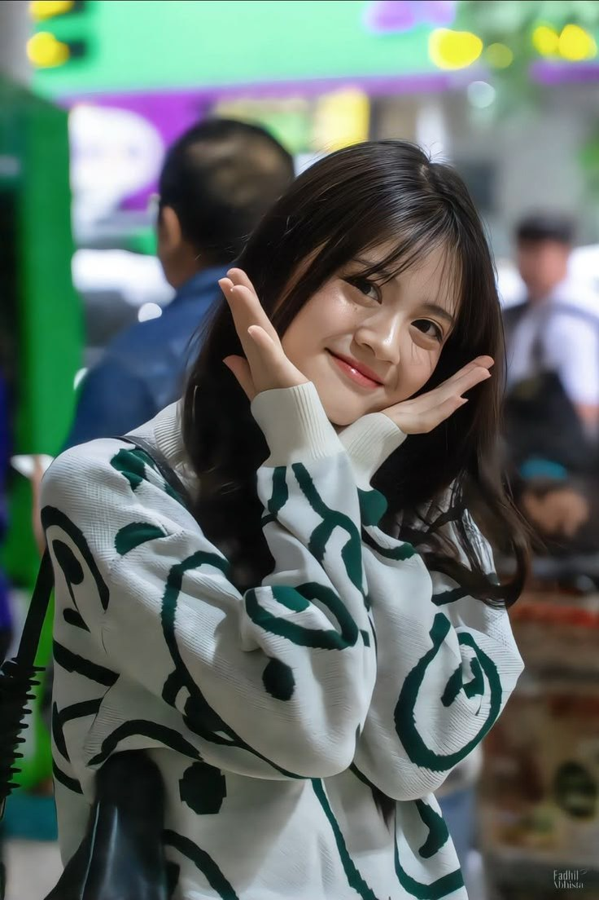
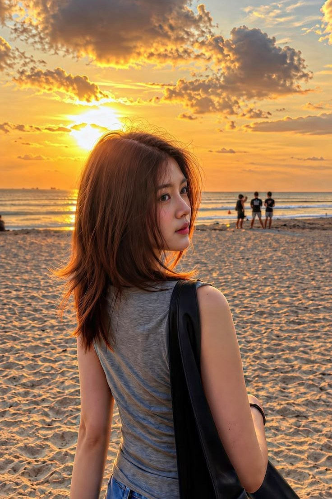
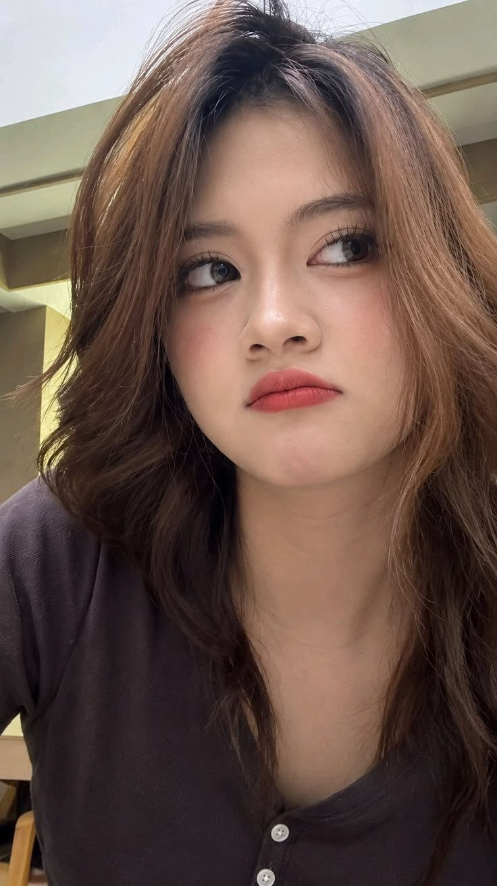
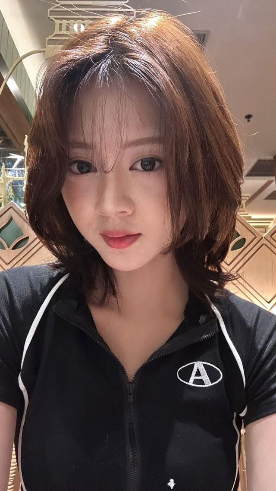

CHRISTY
JIKOSOUKAI
Suka menari dan bermain game,
selalu nantikan aku ya!
Halo aku Christy!
Site by axryzure
Current News !!
Christy adalah member JKT48 generasi ke-7 yang dikenal
ramah, humoris, dan jago menari.
The Question Is:
Terus belajar hal baru, jangan takut mencoba.
~Christy~

Halo, aku Christy!
Angelina Christy adalah member JKT48 generasi ke-7 yang bergabung sejak 2018 dan dikenal lewat panggung teater JKT48 New Era. Lahir di Jakarta, ia juga aktif di media, iklan, dan konten digital.
- Nama
- Angelina Christy
- Lahir
- Jakarta, 5 Desember 2005
- Generasi
- JKT48 Gen 7
- Julukan
- Toya
Perkenalan · 自己紹介Suka menari dan bermain game, selalu nantikan aku ya!
Di atas panggung
Dari teater sampai layar kaca — tempat-tempat Christy bisa kamu temui.
-
(01)
Teater
Tampil di panggung teater JKT48 New Era, termasuk setlist Ramune no Nomikata.
→ -
(02)
Media
Hadir di berbagai konten, iklan, dan program media bersama JKT48.
→ -
(03)
Event
Bertemu Christyzer di berbagai event dan acara JKT48.
→
It's not impossible, it's just hard.
Potret Christy
Geser untuk melihat →



Selalu nantikan aku ya!
Kontak →